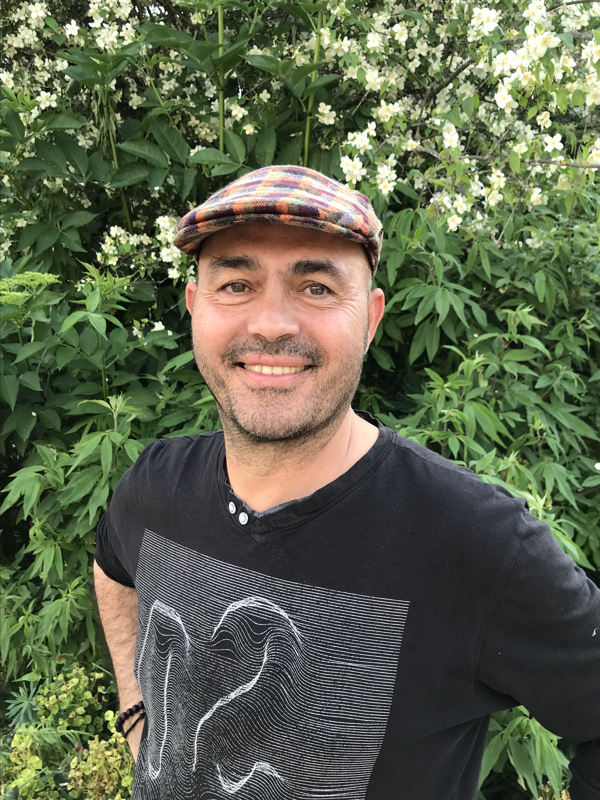

Bienvenue,
Je suis gestalt-thérapeute formé au GREFOR à Grenoble, où j'ai étudié pendant plusieurs années. Mon chemin de vie m'a également conduit à vivre une retraite spirituelle intense pendant une décennie dans un monastère. Cette expérience de vie riche en événements m'a permis de développer une profonde compréhension des multiples dimensions de l'existence humaine..
